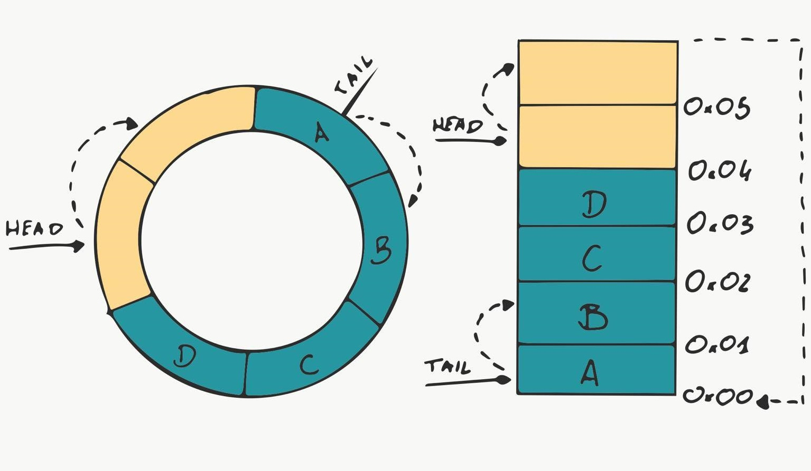

Memory Scratch Pad Protocol - Circular Buffer
When working with many ICs that acts as slave you probably have seen their memory organization. Data that is responsible for hardware configuration is mapped to a certain memory addresses which you can access or modify correspondingly. By implementing well known standards such a SPI or I2C you can send: address, command and in case of write operation data to the slave device. The region of memory which is kept updated is called memory scratchpad — this memory registers are acting like a bridge between configuration bits and also conversion results.
When the necessity of connection between two devices comes, we have plenty of well written standards and ready freamworks. We can make our implementation of MODBUS protocol, TCP/IP or just use raw UART connection. Using simple raw bytes right from UART buffer can sound very straight forward. Unfortunately problems are arising, when we have to receive and parse many bytes in short period of time without constantly blocking whole task execution. ISRs are coming handy, but they have their limitations especially when we can't use DMA because of lack of such great peripherals or used up channels.
In this article I am going to describe step by step how to implement reliable communication between microcontroller and PC. Firstly we will implement circular buffer to make space for our incoming data while the processor is busy. Next, we will write implementation of simple scratchpad like protocol. After finishing the uC part, we will move to the PC section. We will try to make use of the python script language to write our master's device code.
To sum up everything we will divide our finish line into few steps: - circular buffer library - this will let us to give our uC some time to process infromation, - scratch Pad protocole library and implementation for uC, - python class to establish reliable connection.
Circular buffer
On the Internet we can find many code snippets that are ready to use. We will try to build our own version which will be ready for fast and simple reuse. Firstly we should know how our data structure should behave.
Basically it is a fixed size memory region (array) which is able to round around the data if the incoming bytes meet the end of the array, and can perform read/write operations simuntaniusly. Circular buffers have two pointers: - pointer one (head) is pointing to the region of memory where new data can be stored, - pointer two (tail) is pointing to the region of memory from where next data should be read. The circular buffer is full when the next memory address of __ head__ will be the same memory address as __ tail__ is pointing to. The circular buffer is empty when the tail and the head is pointing the same memory address. Two pointers gives this data structer ability to read and write "parallel".

With this knowladge we can create simple structure for our circular buffer. Shall we create "circular_buffer.c" with:
#include "circular_buffer.h"
struct GPL_circular_buffer_t{
size_t bufferSize;
size_t readIndex;
size_t writeIndex;
int full;
char *buffer;
};
While creating our library we will try to protect our struct from direct access by simple trick - declerate our typedef in "circular_buffer.h":
typedef void *circular_buffer;
We will be obligated to dereference the void pointer to our real struct so we can access the data without problems:
struct __circular_buffer *handler = (struct __circular_buffer *) malloc(sizeof(*handler));
User can initialize the circular buffer using create function:
GPL_circular_buffer_t *circular_buffer_create(size_t size){
if(size < 1)
return NULL;
struct __circular_buffer *handler = (struct __circular_buffer *) malloc(sizeof(*handler));
handler->buffer = (char *) calloc(size, sizeof(char *));
handler->bufferSize = size;
handler->readIndex = 0;
handler->writeIndex = 0;
handler->full = 0;
return (circular_buffer)handler;
}
Do not forget that what we malloc/calloc we have to free up. The deinicializer seems pretty straight forward. We have made malloc for the structure and calloc for the buffer itself:
int circular_buffer_destroy(circular_buffer *handler){
struct __circular_buffer *__handler = (struct __circular_buffer *) handler;
free(__handler->buffer);
free(__handler);
return 1;
}
Small handy functions for easier code readability:
int circular_buffer_full(circular_buffer *handler){
struct __circular_buffer *__handler = (struct __circular_buffer *) handler;
if(__handler->full)
return 1;
else
return 0;
}
void circular_buffer_reset(circular_buffer *handler){
struct __circular_buffer *__handler = (struct __circular_buffer *) handler;
__handler->readIndex = 0;
__handler->writeIndex = 0;
__handler->full = 0;
}
size_t circular_buffer_capacity(circular_buffer *handler){
struct __circular_buffer *__handler = (struct __circular_buffer *) handler;
return __handler->bufferSize;
}
int circular_buffer_empty(circular_buffer *handler){
struct __circular_buffer *__handler = (struct __circular_buffer *) handler;
if((__handler->readIndex == __handler->writeIndex) && !__handler->full)
return 1;
else
return 0;
}
Now we need to take care of the logic. Firstly we will allow the user to push new byte:
int circular_buffer_write(circular_buffer *handler, char data){
struct __circular_buffer *__handler = (struct __circular_buffer *) handler;
if(!circular_buffer_full(handler)){
__handler->buffer[__handler->writeIndex] = data;
__handler->writeIndex = (__handler->writeIndex + 1) % __handler->bufferSize;
__handler->full = (__handler->writeIndex == __handler->readIndex);
return 1;
}else{
return 0;
}
}
We have used small little trick with modulo operator to be sure that we won't exceed the allocated memory region. In example, we have only 5 element array, but the counter is constantly incrementing, we would like to overwrite the data so:
char array[5] = { 0 };
for(int i = 0; i < 10; ++i)
array[i % 5] = 'a' + i;
printf("%c", array[0]);
printf("%c", array[1]);
printf("%c", array[2]);
printf("%c", array[3]);
printf("%c", array[4]);
the output is going to be:
> fghij
because the output of 0 % 5 is 0 3 % 5 is 3 5 % 5 is 0 6 % 5 is 1 etc.
To read character we should make exactly the same thing but with read pointer instead of write pointer:
char circular_buffer_read(circular_buffer *handler){
struct __circular_buffer *__handler = (struct __circular_buffer *) handler;
char data = -1;
if(!circular_buffer_empty(handler)){
data = __handler->buffer[__handler->readIndex];
__handler->readIndex = (__handler->readIndex + 1) % __handler->bufferSize;
__handler->full = 0;
}
return data;
}
Now we can go forward to create our scratch pad protocole implementation.
Below you can find ready files with circular buffer library: